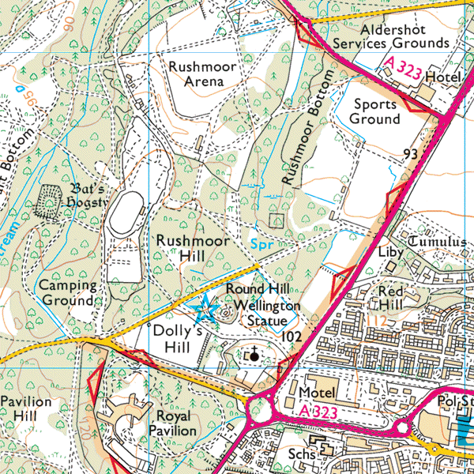

Hampshire Cross-Country League
Wellesley Woodlands, Aldershot

Directions
Aldershot, Farnham and District Athletic Club are pleased to invite you to Wellesley Woodlands, near the Wellington Statue in Aldershot.
Download parking and course maps (updated for 2023)
Access to site is from Wellesley Road only - the postcode GU11 1QA is for the Church.
what3words ///shares.moons.dwell is for the exact location.
Whilst the venue is close to Rushmoor Arena, access and parking is different to that used for road relays.
We are grateful to Grainger plc, Rushmoor Borough Council, the Land Trust and Blackwater Valley Countryside for allowing us to host the event.
Please share this information with your athletes and ask them to comply with all signs and instructions. Inconsiderate parking puts future events at risk.
- Car, coach and minibus parking is available on site.
- Some of the access roads are military roads, patrolled by the Military Police. These roads are emergency access roads and must not be parked on. Please park only as directed by marshals.
- The venue is on the edge of Aldershot Town Centre - 20 minute walk from the railway station.
- Portable toilets and first aid will be located at "Race HQ" just off Bourley Road, near the A325.
- Nearest refreshments are at Tesco which also has a café.
- Please don't warm up on or run across any marked football pitches.